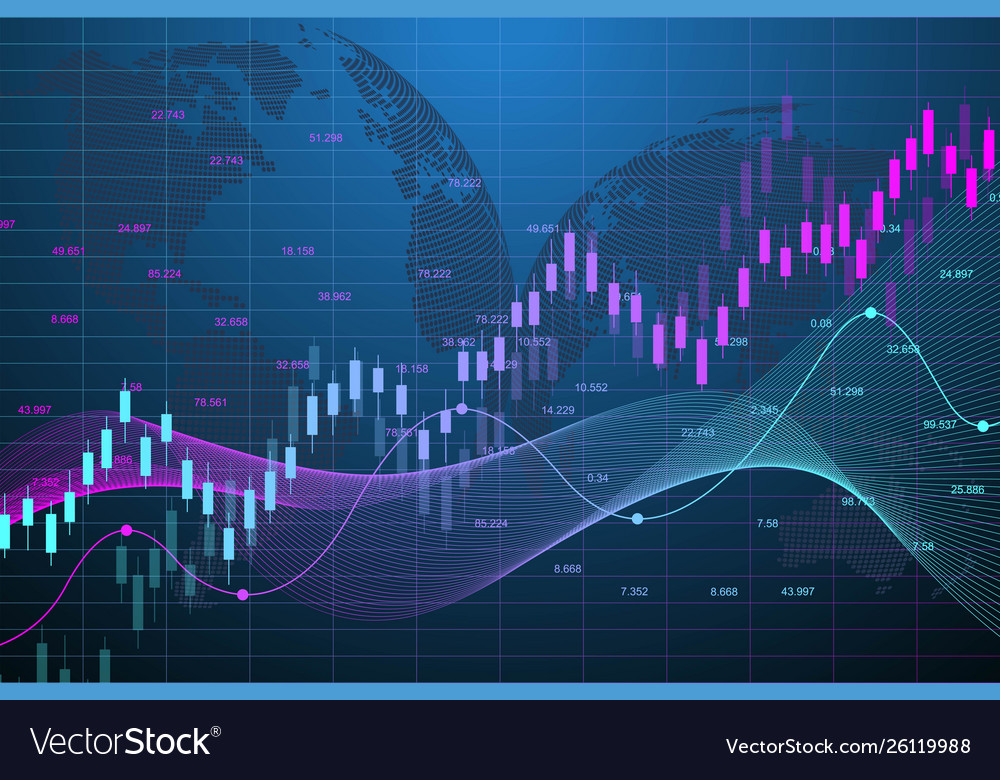

THE FINANCIAL MARKET
Secrets Of Forex Trading [1]

Introduction
The foreign exchange market, commonly known as Forex, is the global marketplace for trading currencies.
Forex operates 24/5, connecting banks, financial institutions, corporations, governments, and individual traders.
Its primary purpose is to facilitate the exchange of one currency for another, enabling international trade and investment.
Forex trading involves the simultaneous buying of one currency while selling another, with the aim of profiting from fluctuations in exchange rates.
It's the largest and most liquid financial market globally, with a daily trading volume exceeding $6 trillion.
Forex is accessible to both experienced professionals and novice traders, offering opportunities for speculation, hedging, and investment.
Understanding the dynamics of this market is crucial for anyone venturing into the world of international finance.
Understanding Technicals
Understanding technical strategy in forex trading involves analyzing price charts, indicators, and patterns to predict future currency movements.
Traders use tools like trendlines, moving averages, RSI, and candlestick patterns to make informed decisions.
By studying historical price data, traders aim to identify trends and key support/resistance levels, enhancing their trading decisions.

Understanding Fundamental [News]
In forex trading, understanding fundamental news is crucial.
Economic events, political developments, and central bank policies can significantly impact currency values.
Traders must stay informed about key indicators like interest rates, GDP growth, employment data, and geopolitical events.
Analyzing these factors helps predict currency movements and make informed trading decisions.
Fundamental analysis complements technical analysis, providing a comprehensive view of the forex market.
Successful traders use this knowledge to anticipate trends, assess risk,
and seize trading opportunities based on the broader economic and political context.

Understanding Risk Managements
Risk management is paramount in forex trading.
Traders must protect their capital by setting stop-loss orders to limit potential losses.
Position sizing is critical to avoid overexposure.
Diversifying across multiple currency pairs can spread risk.
Maintaining a risk-reward ratio is essential, ensuring potential gains justify potential losses.
Regularly assessing market conditions and adjusting strategies as necessary helps mitigate risk.
Ultimately, successful forex trading requires a disciplined approach to risk management, safeguarding capital in the highly volatile forex market.
A risk to reward ratio of 1:2 requires a percentage winning of 34% for one to br profitable.
Without proper risk management a trader will not be profitable.

Understanding Psychology
Psychology plays a pivotal role in forex trading success.
Emotions, particularly fear and greed, often drive trading decisions.
Fear of losses can lead to impulsive selling, while greed may cause traders to hold on to winning positions for too long.
These emotional reactions can lead to significant losses.
Discipline and emotional control are vital.
Traders must adhere to their trading plans and avoid making impulsive decisions.
Developing a strong psychological framework to handle losses and gains is essential.
This involves recognizing that losses are part of the trading game and maintaining composure during market fluctuations.
Overconfidence is another psychological pitfall.
Traders can become overly optimistic during winning streaks, potentially leading to risky trades.
It's important to stay grounded and maintain objectivity.
Patience is a virtue in forex trading.
Waiting for the right setups and avoiding overtrading is essential.
Understanding that not every trade will be a winner and that consistency is the key to long-term success helps manage expectations.
In conclusion, the psychological aspect of forex trading is as important as technical analysis and risk management.
Mastering emotions, maintaining discipline, and developing a resilient mindset are crucial for achieving success in this highly volatile and competitive market.

My Personal Advice
- Do not Trade without proper knowledge of trading : -->
Buy a course or attend a good mentorship class, dont just watch one video somewhere and think you are fully preapered
be sure to have good knowledge before you start trading.
- Once you have the knowledge start with a demo account to test run your strategy. If the demo account is profitable then you can carry on and move forward,
if otherwise do not trade live account keep learning until you are profitable in your demo
- Once you start trading live dont start with a very huge capital,
start with a capital that you can afford to loose, most times first time live traders tend to loose their account,
this is normal for most traders, including my self.
- Emotion is a big player in this game of forex
for beginners viewing a trade in loss discourages them and they tend to close their trades
even when stop loss has not been hit,
then the trade goes back in their favour later on then they feel regret and enter immediately to gain
back then the market punish their account for entering without proper setup
- Patience is a virtue
you must apply patience in waiting for your proper set up before entering a tradeyou must apply patience in waiting for your trades to hit Take Profit [TP]
or Stop-Loss[SL], you must also apply patience in waiting for price to get to your level before entry
- Use proper risk management, use SL and TP, have a realistic target
- Stay around like minded people that can analyse with you and give you a different prespective to a trade, that help in boosting your confidence
- Using other people signals is not wrong but what is wrong is when their risk does nit fit yours and you still enter
i personally advise that you dont have many signal groups because it can be confusing and can affect your judgements
- Do not focus on many trades maximum i recommend is 3 dosent mean you cant analyse or do more but the more trade you take the higher the risk. Advisable you stick to 1/2 pairs
- Figure out what works best for you as far as you are profitable with it.
- Remove any fear of missing out [FOMO] the market wont run away
- Once you loose a trade consecutively leave the market do something to relax your mind
- Learn to set break even once you have reached half of your target
- Do not trade the news except you are sure of what you are doing or else you are risking your account
- Do not borrow to trade
Hit the "about" button to learn more
I would advise you join the VIP signal group for constant profits.To connect with me on all social media platforms hit the "contact"button.